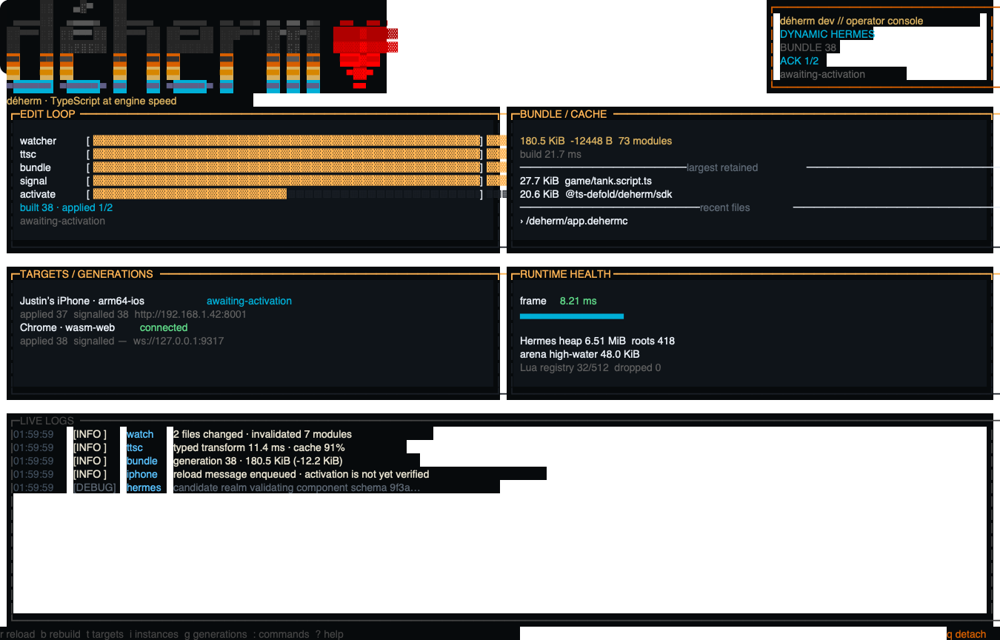

Direct generated C ABI
3.8 nsBest measured borrowed-handle frame over a stub provider.
Write Defold games in TypeScript with generated engine APIs, a fast local development loop, Hermes on native targets, and the browser's JavaScript engine on HTML5.
$ pnpm dlx @ts-defold/deherm create my-game --name "My Game"$ cd my-game$ pnpm install$ pnpm dev
Scaffold a complete Defold + TypeScript game, or add déherm to the directory that already contains your game.project. The project’s selected Defold revision remains the source of truth.
$ pnpm dlx @ts-defold/deherm create my-game --name "My Game"$ cd my-game$ pnpm install$ pnpm dev
$ cd my-defold-game$ pnpm add -D @ts-defold/deherm$ pnpm exec deherm generate$ pnpm exec deherm dev
Save this as src/player.script.ts. Generation creates the /src/player.script proxy that you attach to a game object in Defold.
pnpm dev opens the full TUI. Press p to build and launch native Defold; press w for HTML5.
Save TypeScript or an asset. The watcher compiles the new generation, activates it, and reports HMR and runtime telemetry in the same console.
import { defold, defineComponent, go, property, vmath } from "@deherm/project";
interface Player {
speed: number;
}
export default defineComponent({
properties: {
speed: property.number(180),
},
init(): void {
defold.log("info", "TypeScript is running in Defold");
},
update(self: Player, dt: number): void {
const position = go.getPosition();
go.setPosition(vmath.vector3(position.x + self.speed * dt, position.y, position.z));
},
});
The editor and terminal are one development surface: generation state, engine targets, logs, live instances, source maps, profiles, and hot reload stay visible.
The default CLI is a full terminal UI. It follows the current generation into native Defold and HTML5, reports the exact activated bundle fingerprint, exposes live logs and target telemetry, and keeps controls discoverable on laptop keyboards.

The language server understands generated Defold resources and component contexts. The extension adds inline property defaults, live instance values, TypeScript source-mapped debugging, evaluate, CPU profiles, and streaming heap snapshots.

These are generated transport costs, measured with profiling compiled out. They isolate the crossing and framing work over stub providers so engine work cannot hide it.
Best measured borrowed-handle frame over a stub provider.
Median across 19 argument/result shapes; 40.0–695.5 ns observed.
Median beyond protected Lua. Complete generated Lua-stack calls measured 283.2 ns including the protected Lua call.
Release host harness over stub providers. This measures generated crossing/framing cost, not the Defold call behind it; the Lua harness uses pinned PUC Lua 5.1 rather than Defold's shipping LuaJIT. Host: Apple M4, 20,000 warm-up calls, best of 9 × 100,000 calls.
Complete War Battles .app logical file bytes.
Complete deployable browser directory. The browser lane does not embed Hermes.
Logical file-byte totals from fresh Bob release bundles. Native overhead compares the linked arm64-macOS executable to Bob's stock dmengine_release from the same pinned Bob jar. Browser overhead compares the Wasm and JavaScript engine shell to stock wasm-web release members; HTML5 embeds no Hermes. Signing, compression by a store/CDN, filesystem allocation, and platform packaging outside these bundle directories are excluded.
The generator emits the whole compatible API once. The build keeps only reachable code and selects the transport that belongs on the target.
Dynamic Hermes keeps iteration immediate: bundle JavaScript to Hermes bytecode, load it in the Defold extension, and hot reload without relinking the engine.
Hermes bytecode + JSIStatic Hermes can compile the reachable typed subset through generated C ABI bindings. Dynamic Hermes remains available where the selected profile needs it.
typed-native + generated fallbackUse the JavaScript engine already in the browser. Generated direct-memory bindings call into Defold’s Wasm engine without embedding another VM or using embind.
browser JS + Wasm direct memoryStart small, then inspect the dogfood game and the standalone networking extension when you need the full stack.
A complete Defold game written in TypeScript: generated components, GUI, native and browser targets, hot reload, Static Hermes reachability, bots, and a 32-player network simulation.
Explore the game →A separately usable Defold extension with a Lua API, C API, TypeScript surface, browser backend, native QUIC backend, and minimal Deno echo server.
Use the extension →